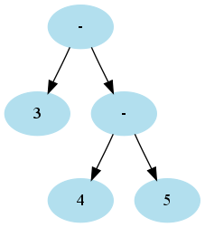

expr ::= term (( "+" | "-" ) expr)?
term ::= factor (( "*" | "/") term)?
factor ::= wholeNumber | "(" expr ")"
expr term factorwholeNumber " (" "+" ...
Not the same as an expression tree!
~, returns instance of class ~ (similar to a pair)|rep(P), returns List of the results of Popt(P), returns Option: Some of the result of P, or Noneclass SimpleLanguageParser extends JavaTokenParsers {
def expr: Parser[Any] = term ~ opt(("+" | "-") ~ expr)
def term: Parser[Any] = factor ~ opt(("*" | "/" ) ~ term)
def factor: Parser[Any] = wholeNumber | "(" ~ expr ~ ")"
}
((3~None)~Some((-~((4~Some((*~(5~None))))~None))))
^^ operator to transform. For example,
wholeNumber ^^ (_.toInt)
def expr: Parser[Int] = (term ~ opt(("+" | "-") ~ expr)) ^^ {
case a ~ None => a
case a ~ Some("+" ~ b) => a + b
case a ~ Some("-" ~ b) => a - b
}
~>, <~ to discard tokens
def factor: Parser[Int] = wholeNumber ^^ (_.toInt) |
"(" ~> expr <~ ")"
Parser[...] type must match the return type of the transforms (here, Int)Int works if we interpret an arithmetic expression without variablesParser[Expr]
class Expr case class Number(value : Int) extends Expr case class Variable(name : String) extends Expr case class Operator(left : Expr, right : Expr, f: (Int, Int) => Int) extends Expr
class SimpleLanguageParser extends JavaTokenParsers {
def expr: Parser[Expr] = (term ~ opt(("+" | "-") ~ expr)) ^^ {
case a ~ None => a
case a ~ Some("+" ~ b) => Operator(a, b, _ + _)
case a ~ Some("-" ~ b) => Operator(a, b, _ - _)
}
...
}
Operator(Number(3),Operator(Number(4),Number(5),<function>),<function>)
3 - 4 - 5expr ::= term - expr
::= term - term - expr

expr and term?expr ::= expr - term ::= expr - expr - term :: expr - expr - expr - term
class SimpleLanguageParser extends JavaTokenParsers {
def expr: Parser[Expr] = term ~ rep(("+" | "-") ~ term)
def term: Parser[Expr] = factor ~ rep(("*" | "/" ) ~ factor)
def factor: Parser[Expr] = wholeNumber | "(" ~ expr ~ ")"
Operator(Operator(...(Operator(term1, term2, op1), term3, op2), ...)
foldLeft or the /: operator
def sum(lst: List[Int]) = (0 /: lst) ((x, y) => x + y)
/: indicates the tree shape
a+b+c
/ \
a+b c
/ \
a b
/ \
0 a
3 ~ List("-" ~ 4, "-" ~ 5)
-6 / \ -1 "-" ~ 5 / \ 3 "-" ~4
"-" ~ 4case (x, "+" ~ y) => Operator(x, y, _ + _) case (x, "-" ~ y) => Operator(x, y, _ - _)
def expr: Parser[Expr] = (term ~ rep(("+" | "-") ~ term)) ^^ {
case a ~ lst => (a /: lst) {
case (x, "+" ~ y) => Operator(x, y, _ + _)
case (x, "-" ~ y) => Operator(x, y, _ - _)
}
Expr with the correct structure
lab9/report.txt inside the Git repo. Include the coder's name in the report! Complete the program from slides 3 and 4.
import java.io._
import scala.util.parsing.combinator._
class SimpleLanguageParser1 extends JavaTokenParsers {
def expr: Parser[Int] = (term ~ opt(("+" | "-") ~ expr)) ^^ {
case a ~ None => a
case a ~ Some("+" ~ b) => a + b
case a ~ Some("-" ~ b) => a - b
}
. . .
def factor: Parser[Int] = wholeNumber ^^ (_.toInt) | "(" ~> expr <~ ")"
}
object Main extends App {
val parser = new SimpleLanguageParser1
val result = parser.parse(parser.expr, new InputStreamReader(System.in))
println(result)
}
Complete the program from Slide 5.
import java.io._
import scala.util.parsing.combinator._
class Expr
case class Number(value : Int) extends Expr
case class Variable(name : String) extends Expr
case class Operator(left : Expr, right : Expr,
f: (Int, Int) => Int) extends Expr
class SimpleLanguageParser2 extends JavaTokenParsers {
def expr: Parser[Expr] = (term ~ opt(("+" | "-") ~ expr)) ^^ {
case a ~ None => a
case a ~ Some("+" ~ b) => Operator(a, b, _ + _)
case a ~ Some("-" ~ b) => Operator(a, b, _ - _)
}
...
}
object Main {
def main(args : Array[String]) : Unit = {}
val parser = new SimpleLanguageParser
val result = parser.parse(parser.expr, new InputStreamReader(System.in))
println(result)
}
NOTE: Unfortunately, (Number(_.toInt)) doesn't work. Use (x => Number(x.toInt))
expr and term in the right hand side of the first production? Try parsing 3 - 4 - 5 again.Complete the program from slide 8:
import java.io._
import scala.util.parsing.combinator._
class Expr
...
class SimpleLanguageParser3 extends JavaTokenParsers {
def expr: Parser[Expr] = (term ~ rep(("+" | "-") ~ term)) ^^ {
case a ~ lst => (a /: lst) {
case (x, "+" ~ y) => Operator(x, y, _ + _)
case (x, "-" ~ y) => Operator(x, y, _ - _)
}
}
...
}
object Main extends App {
...
}
3 - 4 - 5? Variable. How can you enhance your program to parse them as well, e.g. 3 - 4 * x?